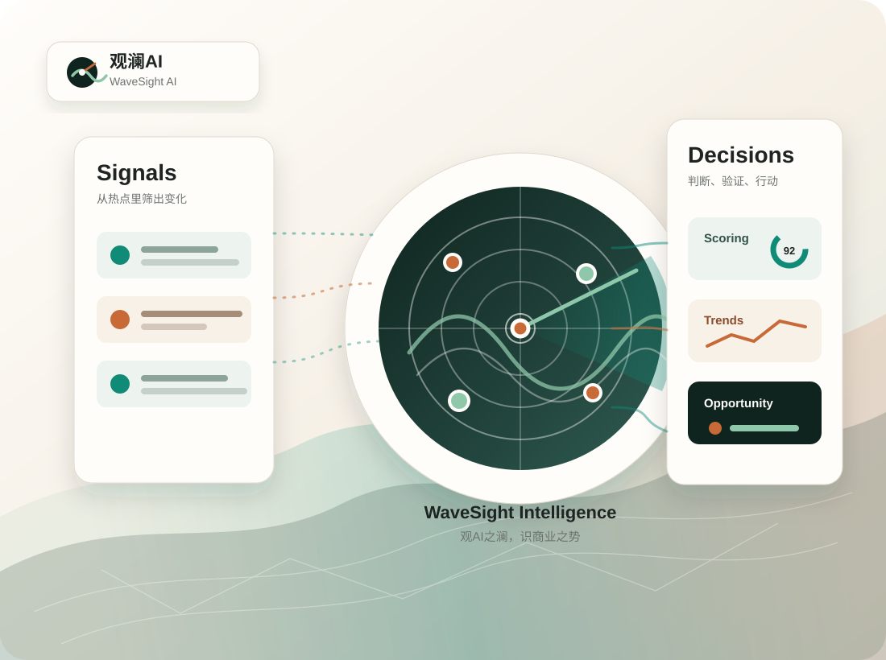

早半步看见机会
在媒体共识和资本共识形成前，捕捉已经出现客户、收入或产业落地的 AI 变化。

在媒体共识和资本共识形成前，捕捉已经出现客户、收入或产业落地的 AI 变化。
把碎片新闻压缩成老板能开会讨论的判断、问题清单和优先级。
识别谁有需求、谁有产品、谁有渠道、谁值得被连接。
不按声量追热点，重点看收入、客户、融资、复购和真实部署。
Decision Brief
Membership
注册后查看 Daily Brief、Signals、Trends 与 Opportunities 的完整信号脉络。